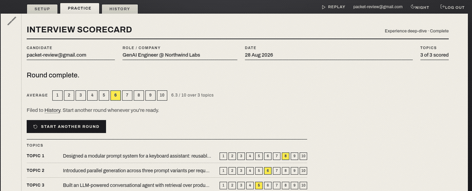
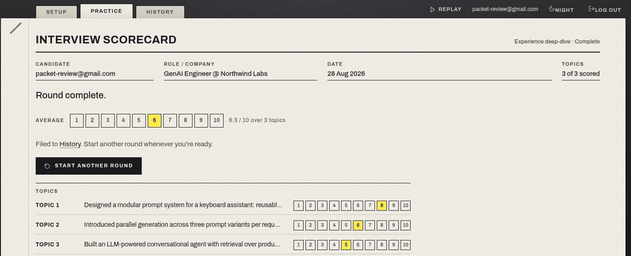
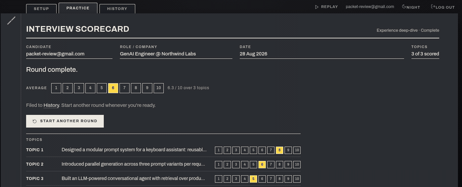
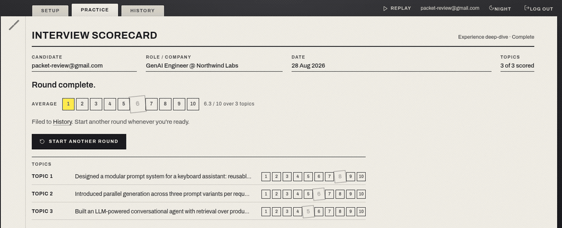
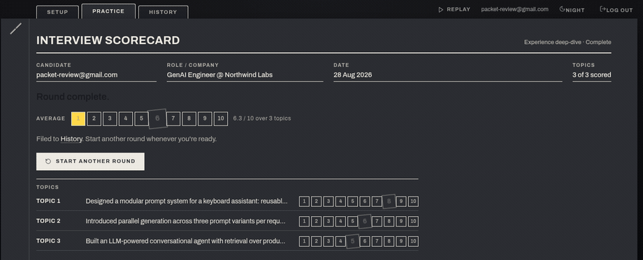
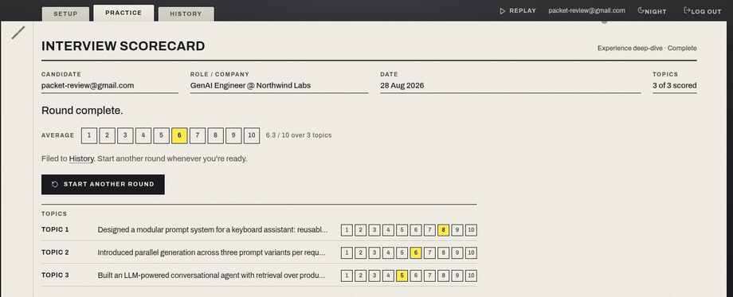

The same completed scorecard (three real topics from the review account: 8, 6, 5 - average 6.3) with four different first three seconds. Each row shows a recording of the moment in day and night stock, then the variant itself, live: press Replay on its desk bar to run it again, or open the .html at any width (add #night). Every variant honours prefers-reduced-motion by showing the end state without movement.
The panel's rubber stamp. 420 ms after the sheet lands, COMPLETE with the date slams onto the title line in the History stamp's green (double rule, ink that did not take everywhere, -6°, 320 ms from twice its size with a slight overshoot), and the sheet jolts 2 px under it. The stamp stays on the sheet as the record's mark - the same COMPLETE / ABANDONED stamp History uses, so an abandoned round gets the red one. One authored moment, ~0.6 s, no particles. Reduced motion: the stamp is simply there.

The interviewer signs off. The red pen draws a loose ring around the average's scored cell (560 ms), ticks the title (240 ms), then a margin note in the interviewer's hand rises in - VERDICT: 'Solid round.' (banded by score: Strong / Solid / Keep at it - copy to confirm). The only variant that adds words; it is the interviewer's voice closing the packet, and it lasts ~1.4 s. Reduced motion: ring, tick and note are drawn already.


The highlighter runs down the sheet. 'Round complete.' is painted left to right (380 ms, the 'Your turn' swipe), the pen runs cell to cell along the AVERAGE row and lands on the score with the stamp the live scorecard uses, then each topic's score lands in turn, 170 ms apart. Nothing new is added to the sheet: every motif already exists in the round, and the completion replays them once, top to bottom, in ~2.3 s. The quietest. Reduced motion: every mark is on from the start.


The hole punch, if a shower is wanted after all. Seventy paper chads in the packet's own pigments (ink, highlighter, pen, orange, paper) drop from the sheet's top edge across its width and tumble off the bottom over ~2.4 s - today's confetti, but the packet's own scraps and CSS only (no react-confetti, no canvas, no resize listener). Reduced motion: nothing falls.
